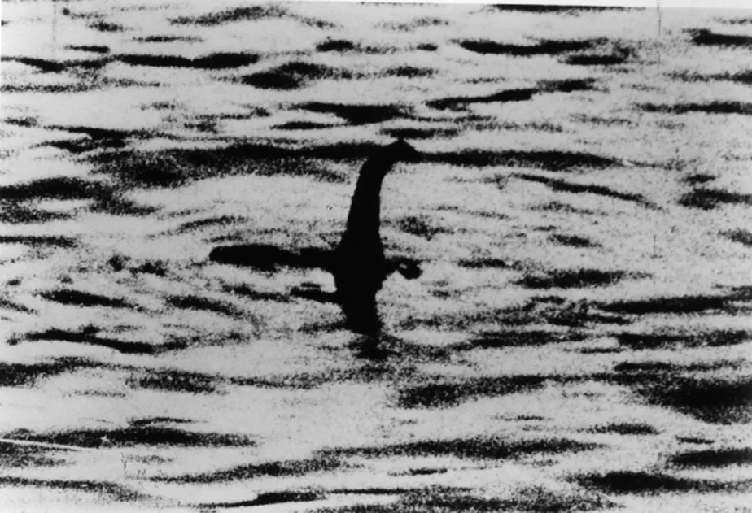

O que são criptídeos
Criptídeos são criaturas misteriosas que fazem parte de lendas, relatos populares e
histórias ao redor do mundo, mas que não foram oficialmente comprovadas pela ciência.
São seres que vivem no limite entre o real e o imaginário — como o Pé Grande, o Monstro
do Lago Ness, o Chupacabra, o Mothman, entre muitos outros.
A palavra vem de criptozoologia, que é o estudo dos animais ocultos ou desconhecidos.
Esses seres costumam ser descritos por testemunhas, aparecem em mitos antigos ou em
avistamentos recentes, mas não têm evidências científicas sólidas que confirmem sua
existência.

Desenvolvedor do projeto
Olá, sou o Samuel, o desenvolvedor desse projeto que visa juntar essa comunidade e trazer de certa
forma uma ajuda que esse universo me deu.
Qundo tinha por volta de 3 a 4 anos, tiver um trauma que me assombrou até meus 15 anos, esse
trauma me deu um medo extremo do escuro e de coisas de terror, me paralisando e me deixando ancioso com trailers
de terror, ficar no escuro e ficar sozinho em qualquer.
Ao conhecer o universo dos criptideos, explorei e me expus aos pouco a enfrentar esse medo, ao conhecer mais
de como a criaturas e animais que são considerados lendas e que nem todas estão para nos caçar e matar, vi que meu medo
era algo do mais de estar com medo do desconhecido e no que habita no vazio.